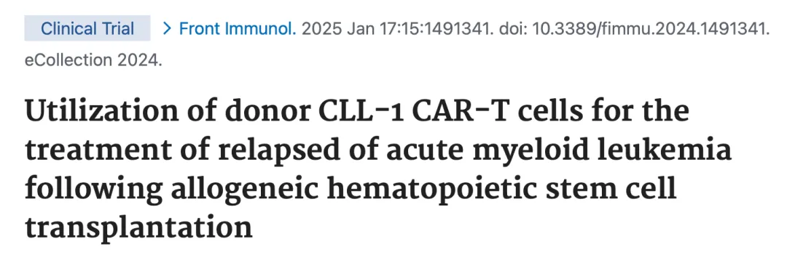
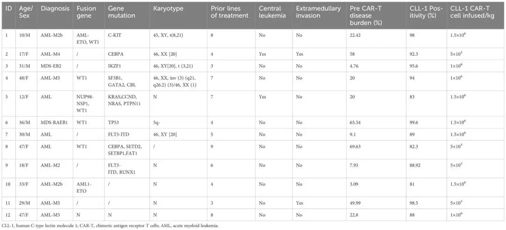
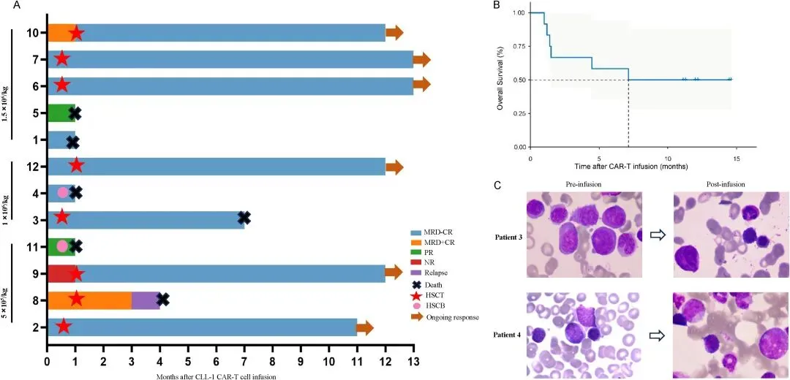
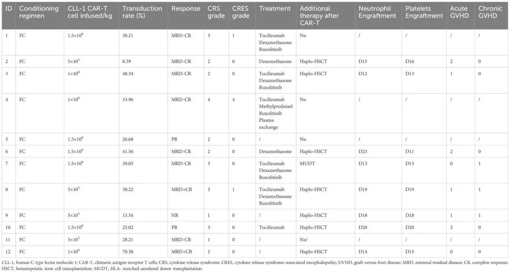
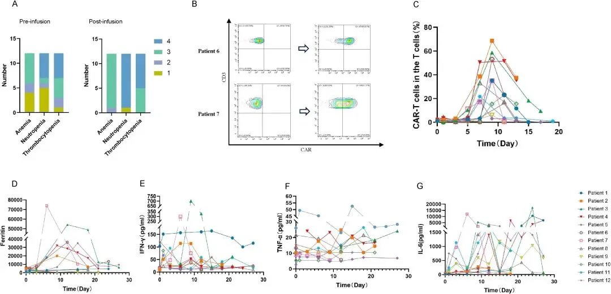
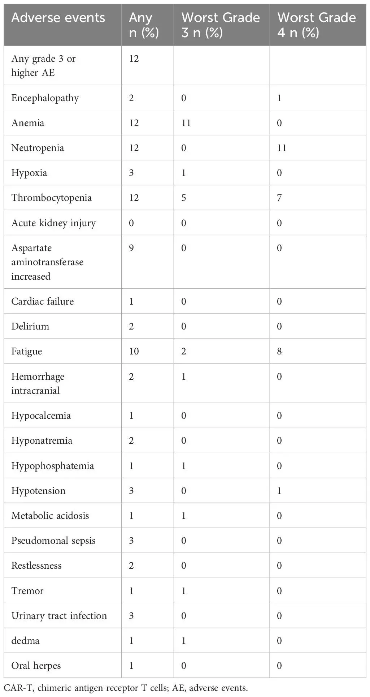
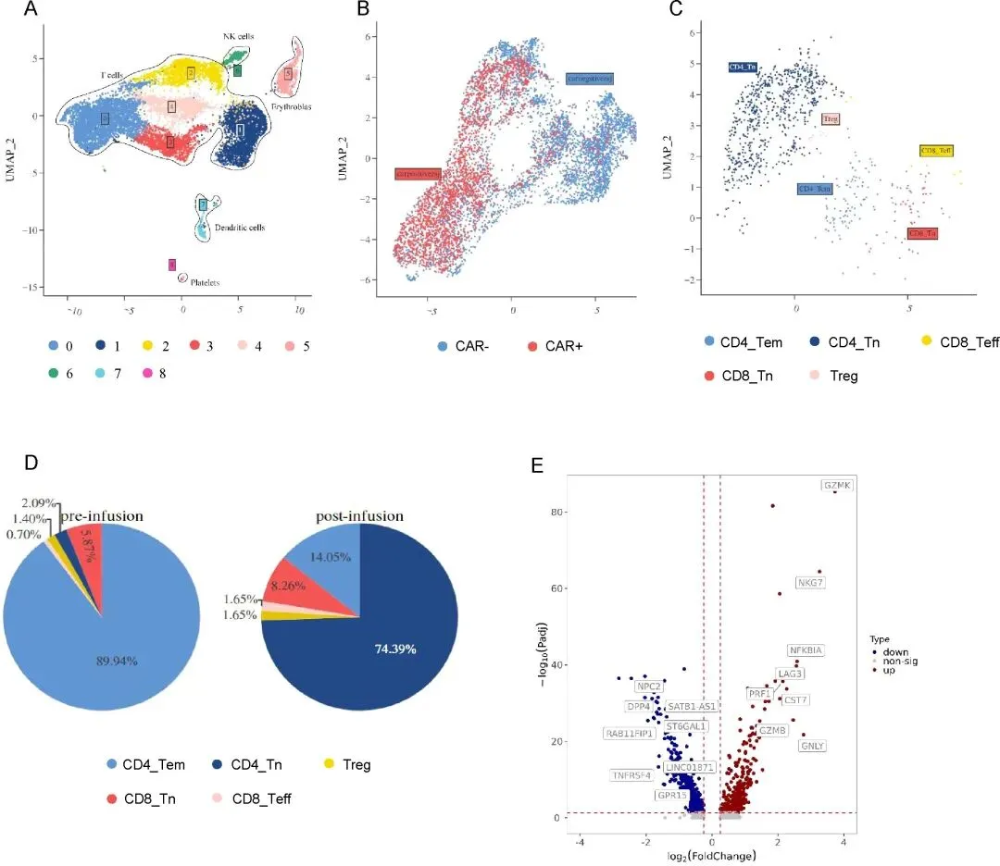

利用CLL-1CAR-T细胞治疗异基因造血干细胞移植后复发的急性髓系白血病
原文：https://mp.weixin.qq.com/s?__biz=MzAwMzIzOTk5OQ==&mid=2247532743&idx=1&sn=2d1d18070af3ee037abc2b608c6d530c&chksm=9b3c3997ac4bb08196541ed458988cdc0851ecf5089fe16875dc3e0fb9aca6eaca379a3f9f35#rd 合集：文献速递
一、写在前面
本次分享的是《Front immunol》（IF=5.9）的文章****，**** 感兴趣的同学可以看看原文：Utilization of donor CLL-1 CAR-T cells for the treatment of relapsed acute myeloid leukemia following allogeneic hematopoietic stem cell transplantation" ，DOI:10.3389/fimmu.2024.1491341

文章背景：
急性髓系白血病（AML） 是一种高度侵袭性的血液肿瘤，异基因造血干细胞移植（allo-HSCT）后复发 患者预后极差，吉西他滨等传统化疗方案疗效有限。嵌合抗原受体T细胞（CAR-T）疗法 作为新兴免疫治疗手段，已在B细胞肿瘤中取得突破，但针对AML的靶点开发仍面临挑战。人类C型凝集素样分子1（CLL-1）作为AML特异性靶点 ，具有广阔潜力。这项研究探讨了供体来源CLL-1CAR-T细胞** 在allo-HSCT后复发AML患者中的应用，共纳入了12名患者，分三组进行剂量递增试验 ，并通过单细胞RNA测序 （scRNA-seq）分析CAR-T细胞动态。本文旨在评估CLL-1CAR-T的疗效与安全性 ，揭示其在AML免疫治疗中的潜力。 **
如果需要数据分析指导 、生信热点全文复现 、自测/数据库数据个性化分析 辅导、常态化实验学习，欢迎联系客服微信[Biomamba_zhushou]
二、主要内容
1.患者特征
这项临床研究最初招募了14名在异基因造血干细胞移植（allo-HSCT）后复发的急性髓系白血病（AML）患者，但其中2名患者因疾病进展过快，在CAR-T细胞输注前退出了研究。共有12名可评估的患者接受了治疗，患者信息如表1所示。这是一个经过多线治疗、病情复杂的极高危患者群体。患者的中位年龄为30.5岁，既往接受治疗的中位线数为5.5线。所有患者均在allo-HSCT后复发，其中2名患者甚至是在第二次移植后复发。接受治疗时，患者的中位肿瘤负荷为20.21%，部分患者还存在中枢白血病（centralleukemia） 、髓外浸润（extramedullaryinfiltration） 以及高危的细胞遗传学和分子特征。值得注意的是，其中2名患者在接受CAR-T治疗前，已经尝试过化疗联合供者淋巴细胞输注（DLI） 进行挽救治疗，但均未取得效果，凸显了这部分患者治疗的棘手程度。

表1
2.临床疗效
在疗效方面，所有12名接受治疗的患者均表现出肿瘤负荷的降低，显示了该疗法普遍的抗肿瘤活性。如图1所示，9名患者（75%）达到了完全缓解（CR），其中7名患者（58.33%） 更是达到了检测不到微小残留病的完全缓解（MRD-CR ），另外2名患者（16.67%） 达到了MRD阳性的完全缓解（MRD+CR ）。此外，还有2名患者获得部分缓解（PR），仅有1名患者无应答。在所有患者中，中位缓解持续时间为7.13个月。对于其中8名获得缓解的患者，CLL-1CAR-T细胞疗法成功地作为一项**“桥接”治疗（"bridging"therapy）** ，使他们能够继续接受后续的二次造血干细胞移植（HSCT）。在中位随访12个月后，部分患者因严重CRS、感染或原发病复发等原因死亡，这反映了尽管该疗法初步疗效显著，但这部分患者群体本身仍面临极高的治疗风险。

图1
3.安全性评估
安全性方面，研究团队评估了CLL-1CAR-T细胞相关的副作用（表2）。该疗法的主要毒副作用与常规CAR-T疗法相似，但血液学毒性尤为突出。细胞因子释放综合征（CytokineReleaseSyndrome,CRS） 在所有12名患者 中均有发生，其中5名患者 达到了3级及以上的重度CRS，且重度CRS更多地出现在最高剂量组中。3名患者出现了相关的神经毒性（CRES ），其中1名患者达到了最严重的4级并最终导致死亡。然而，本研究中最值得关注且普遍发生的不良事件是严重的骨髓抑制。所有患者 都经历了严重的全血细胞减少症（pancytopenia） ，具体表现为11名患者（91.67%） 出现了4级中性粒细胞减少症（neutropenia） ，7名患者（58.33%） 出现了4级血小板减少症（thrombocytopenia） （图2A）。为应对这一严重的副作用，8名患者接受了减低强度的预处理方案后，成功进行了二次移植以恢复造血功能。其他常见的不良反应还包括低磷血症、低钙血症和肝酶升高等（表3）。

表2

图2

表3
4.CLL-1 CAR-T细胞在外周血中的扩增和持久性
通过流式细胞术检测，研究人员发现在所有12名患者的外周血中都能检测到CLL-1CAR-T细胞（CLL-1CAR-Tcells） 的扩增，达到峰值扩增的中位时间为9天 （范围为7-11天）（如图2B、C所示）。与CAR-T细胞扩增相对应，患者体内的铁蛋白（ferritin） 和多种细胞因子（cytokines） 水平也出现了不同程度的升高。值得注意的是，为了降低毒副作用并为后续的二次移植做准备，研究人员在移植前使用了鲁索替尼（Ruxolitinib）和类固醇等药物来终止CAR-T细胞的增殖。因此，在该研究的设计下，CAR-T细胞在第三周后就检测不到了 ，其持久性被人为地缩短了。
5.CAR-T细胞中的scRNA-seq和聚类分析
为了更深入地探究CAR-T细胞在体内的动态变化和功能特征，研究人员对一名经历重度CRS的4号患者，在CAR-T细胞输注前（即产品中）和体内扩增达到峰值时这两个时间点，进行了单细胞RNA测序 （scRNA-seq）。分析发现，CAR-T细胞的亚群构成发生了显著的动态变化：在输注前的产品中，细胞以CD4+初始T细胞（CD4+Tn） 为主；而在体内扩增达到峰值时，则转变为以CD4+效应记忆T细胞（CD4+Tem） 为主导（图3D）。与这种表型转变相对应的是功能上的增强，扩增峰值时的CD4+CAR-T细胞显著上调了与细胞杀伤功能（cellkillingfunction） 相关的基因（如NKG7,PRF1,GZMB）和记忆T细胞功能（memoryTcellfunction） 相关的基因（如GZMK），表明CAR-T细胞在进入患者体内后，其杀伤能力和记忆潜能都得到了强化（图3E）。值得注意的是，该名患者的CAR-T细胞无论是产品还是扩增后，均以CD4+CAR-T细胞 为主，功能富集分析也显示其与炎症反应通路相关，作者据此推测，高比例的CD4+CAR-T细胞可能与该患者经历的重度CRS有关。

图3
三、总结讨论
这项临床研究证实，供体的CLL-1CAR-T细胞在allo-HSCT后复发AML患者中显示出可接受的安全性和显著疗效 ，58.33%患者达到MRD-CR （微小残留病灶阴性的完全缓解），CAR-T细胞峰值扩增时间为9天 。scRNA-seq分析揭示CD4+CAR-T细胞在峰值期上调杀伤和记忆相关基因 ，但高比例CD4+细胞可能与严重CRS（细胞因子释放综合征）相关 ，提示调整CD4:CD8比例可缓解副作用。当然研究也有一定的局限性，即样本量有限 ，长期随访数据不足 ，且重度粒细胞减少 进一步优化管理（如供体干细胞桥接）。可在未来进一步探索CLL-1CAR-T与其他疗法的联合应用 ，以提升持久缓解率，并通过更大规模试验验证其临床价值。该研究为AML免疫治疗提供了新方向 ，推动精准医学发展。

如何联系我们

 留一个领取资料、开箱即用的单细胞分析镜像的微信号[Biomamba_zhushou]，方便各位随时交流。同时我们也构建了交流群矩阵，欢迎大家入群讨论。
大家可以阅读完这几篇之后添加给生信入门初学者的小贴士
没有检索，就没有发言权
留一个领取资料、开箱即用的单细胞分析镜像的微信号[Biomamba_zhushou]，方便各位随时交流。同时我们也构建了交流群矩阵，欢迎大家入群讨论。
大家可以阅读完这几篇之后添加给生信入门初学者的小贴士
没有检索，就没有发言权
已有生信基地联系方式的同学无需重复添加

 您点的每个赞和在看，我都认真当成了喜欢
您点的每个赞和在看，我都认真当成了喜欢